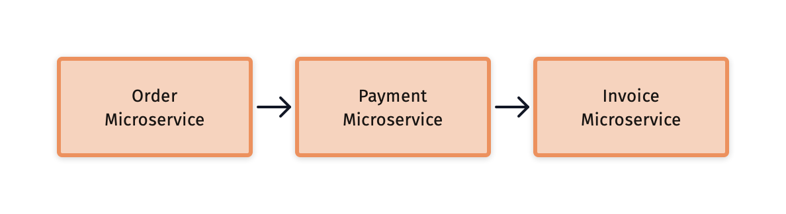
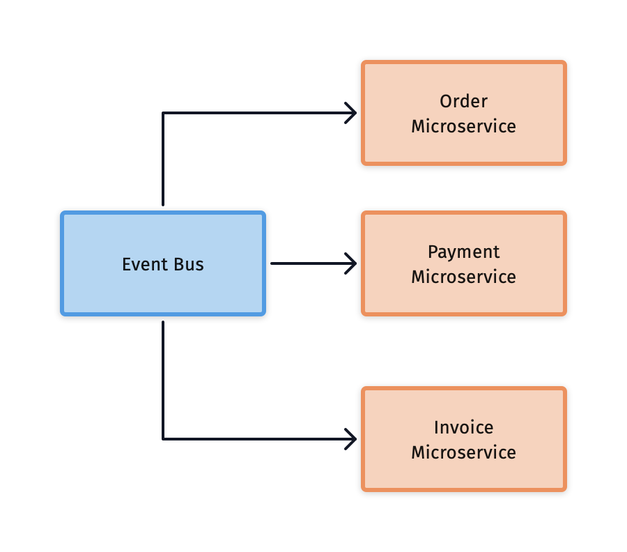

Event Driven Drools: CEP (Complex Event Processing) Explained
In this article we’ll introduce you to a powerful feature of Drools, CEP (Complex Event Processing)
To understand the context, let me introduce the idea about real time computing, a specific branch of computing in which the response of the system is a key component of the result.
In other terms, in a real-time system we care not only about the result, but also when we receive it.
As an example, if a big company is creating a report out of a database we probably don’t care about how long it takes to process it. Most probably management wants to have it as soon as possible, but most of the time, they won’t care if it’s delivered in thirty minutes or in one hour.
Let’s imagine that you’re travelling by plane to your destination, and suddenly one of the engines of the airplane stops working.
The pilot wants to be alerted as soon as possible to take the eventual steps to land the airplane safely.
In this case time is an essential factor of the computation. If the information is delivered late, the safety of the people can be put at risk. It’s important that the software of the airplane runs on a real time system, so that we’re sure that the information comes instantly.
In this example, we call the information on the engine stopping an event.
What is an event?
After the examples, you might have a general idea of what an event is: it’s something that happens in a specific moment in time and that changes the state of the system significantly.
Event processing is then a set of tools that let developers write programs against those facts to process them and act accordingly. For example, we might react to the fact that the price of a Bitcoin is currently less than 2000$ and it could be a good idea to buy it. Definitely not as important as an airplane having a problem, but it might be useful if you’re into cryptocurrencies trading.
Drools is mainly a rule engine so not an end-to-end real time solution, it is not intended to provide any guarantees of delivery time similar to ad-hoc trading systems. But it does execute a lot of rules very fast and moreover it does provide tools to process events by writing rules in the same language we use to write business rules: DRL.
Finally, together with Kogito it becomes an end to end cloud-native business automation solution that can react to domain specific events.
What is CEP?
Complex event processing is an evolution of event processing allowing it to react to temporal correlations among events. The system, in this case Drools, provides tools to make it easy for the users to mix the information available by creating extractions and projections.
CEP systems have been out for a while, but it’s an always actual topic. For example Reactive systems use events to promote decoupling between various parts of your architecture and can ease the maintenance.
In this example we have three different microservices tightly coupled together. One microservice calls directly the other, and inserting a new service in between might be complicated. Another problem with this architecture is handling distributed transactions.

When introducing some kind of event processing to orchestrate microservices we decouple the services from one another and adding a new service will be a matter of creating new types of events and handling them. Events will also inform the services of eventual problems or errors in the process so that each service can rollback its transaction independently, leading to a more robust distributed transaction mechanism.

Also in modern reactive Java development we saw some example of Complex Event Processing, if we take a look at Vert.X or its Camel Bridge (https://vertx.io/docs/vertx-camel-bridge/java/) we might see that idea of passing Events is ubiquitous.
What is CEP useful for?
There are many use cases for CEP, some of them might be
- Stock Market
- IOT
- Fraud Detection
- Monitoring
In this article we’re going to take a look at an example of monitoring. You can find the source code of the example on CEP Explained on GitHub
Example a monitoring service written with Drools
The example provided is targeting Drools 7.59.0.Final, while we expect that most of the CEP related concepts will be identical in Kogito, the syntax of the rule and the API will probably differ slightly.
First of all we have to understand what an event is for Drools. An event is a fact like every other object inserted inside a Drools working memory with some kind of temporal information.
If we provide a single timestamp the event is a Punctual Event, for example an alarm. There is another type of events which are called Interval events that have a begin timestamp and a duration.
In our monitoring service, we have a heartbeat event that is expected to signal that our monitored system is alive. All we need is a few annotations on Java POJOs. There are other ways to define an event, please refer to original CEP Documentation on the Drools website.
@Role(Role.Type.EVENT)
@Timestamp("ts")
public class HeartBeat {
private Date ts;
public HeartBeat() {
}
public Date getTs() {
return ts;
}
public void setTs(Date ts) {
this.ts = ts;
}
}
To enable CEP processing in Drools we must configure the KieBase to work in the STREAM mode. To do so, in Drools we can configure it via the kmodule.xml file like this:
<kmodule xmlns="http://www.drools.org/xsd/kmodule">
<kbase name="CEPExplained" eventProcessingMode="stream" packages="kie.live">
</kbase>
</kmodule>
Let’s now write the first rule, we want to check whether the heartbeat event is coming every five seconds.
If it’s late for any reason, we want to communicate it, in this case using a System.out.println but surely in a real monitoring system it would send a notification of some kind. We’ll also add the last heartbeat to a collection so that we can check the last event inserted.
rule "heartbeat rule"
when
$h : HeartBeat( $ts: ts)
not(HeartBeat( this != $h, this after[0s, 5s] $h))
then
System.out.println("Heartbeat not received in 5s after: " + $ts);
controlSet.push($h); // clear this in production
end
Then we can write a test testing this functionality.
Deque check = new ArrayDeque<>();
session.setGlobal("controlSet", check);
HeartBeat hb1 = new HeartBeat();
Date hb1Date = Date.from(Instant.now());
hb1.setTs(hb1Date);
session.insert(hb1);
// You shouldn't probably test like this
Thread.sleep(6000);
session.fireAllRules();
assertEquals(hb1Date, check.pop().getTs());
This test looks strange: there’s a Thread.sleep inside. This means that your test will stay idle for six seconds without doing anything. If you write a lot of tests like this, the whole suite will slow down significantly for no reason.
Drools provides a better tool to deal with time testing, called Pseudo Clock.
Pseudo Clock is a mechanism to have a kind of simulated clock, totally unrelated to the actual computer clock, that we can handle accordingly.
This is the previous test written with the Pseudo Clock:
KieSessionConfiguration conf=KieServices.Factory.get().newKieSessionConfiguration();
conf.setOption(ClockTypeOption.PSEUDO);
KieSession session=kieBase.newKieSession(conf,null);
...
SessionPseudoClock clock=session.getSessionClock();
HeartBeat hb1=new HeartBeat();
Date hb1Date=Date.from(Instant.ofEpochMilli(clock.getCurrentTime()));
hb1.setTs(hb1Date);
session.insert(hb1);
clock.advanceTime(5,TimeUnit.SECONDS);
session.fireAllRules();
assertEquals(hb1,check.pop());The first lines are to configure the pseudo clock programmatically only in this test, it’s also possible to do it in the kmodule.xml like this.
<kbase name="CEPExplained" eventProcessingMode="stream" packages="kie.live" >
<ksession name="default" clockType="pseudo" />
</kbase>
The rest of the test looks similar, but instead of calling the Java Instant.now we ask to the Pseudo Clock for the timestamp with clock.getCurrentTime() and instead of waiting with Thread.sleep we use clock.advanceTime(5, TimeUnit.SECONDS). If you try running this test from the example you’ll see that it runs very fast, without test interruptions.
Complex Event Processing
The previous basic monitoring scenario is basic event processing. Let’s try and promote it to Complex Event Processing, and by that I mean to correlate various types of events.
For example our monitoring system might decide to notify some external service of how many time a computer has been rebooted. We’ll have another kind of event called SystemRebootEvent that will have a timestamp and a duration of the reboot, and we can count the events with an accumulate function.
The SystemRebootEvent will also have a userId field that we’ll use to get the information about the system administrator of the computer from the Drools memory, exactly how we do with a normal rule with another pattern, by creating a new User pattern with a condition.
rule "Computer is rebooting too many times"
when
$r1 : SystemRebootEvent($cId : computerId, $uId: userId)
$numberOfTimes : Number(this >= 2) from accumulate(
$r2 : SystemRebootEvent(this != $r1,
computerId == $cId,
this meets[1h] $r1),
count($r2)
)
$u : User(id == $uId, notified == false)
then
System.out.println($u.getUsername() + ", your computer was rebooted " + $numberOfTimes + " times after a reboot" );
modify($u) {
setNotified(true);
}
usersNotified.push($u); // clear this in production
end
Future of CEP in Kogito
As stated before, most of the CEP functionalities of Drools 7 will be supported in Drools 8 and in Kogito as well, albeit probably with some differences in the API.
For Kogito specifically we’re planning to also provide some new features built on top that will allow users to leverage the power of the hybrid cloud to get high availability and some form of distributed processing by coordinating different rule units.
These features are still in an Alpha stage, so if you’re interested please continue following this blog.
Here’s a sneak peek of these features: In Kogito 1.12, bound to be released in the following days, we added the possibility to use a CloudEvents message via Kafka to trigger the execution of a DRL (see example. This is currently supported only for stateless use cases but it is the first step to bring cloud-native replicated CEP Drools capabilities in Kogito.
Conclusion
We understood the idea behind having time based events in a rule engine and we saw a simple example of a monitoring service with the correct approach to testing CEP.
We also saw how the monitoring service can be evolved using the same DRL syntax that we normally use to write business rules.
For more information, please refer to the original CEP Documentation on the Drools website.